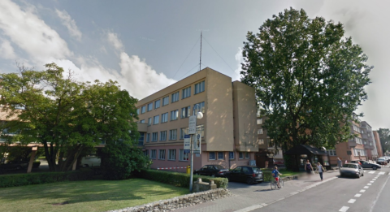
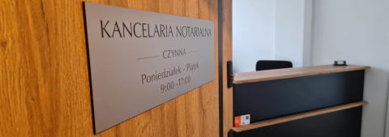

Kancelaria Notarialna
Anna Wawszczak
Notariusz
Opole - Zaodrze
ul. Stanisława Spychalskiego 13lokal 101A (1 piętro)
Szanowni Państwo,
witamy na stronie kancelarii Notariusz Anny Wawszczak!
Oferta kancelarii skierowana jest do osób fizycznych, osób prawnych i innych podmiotów, które poszukują pomocy notariusza.
Kancelaria mieści się w Opolu, przy ulicy Stanisława Spychalskiego 13/101A, na pierwszym piętrze budynku (opolskie Zaodrze, budynek położony pomiędzy Odrą, a Kanałem Ulgi). Położenie kancelarii zapewnia wygodny dojazd z Zaodrza, Wójtowej Wsi, Szczepanowic oraz pobliskich miejscowości. W okolicach kancelarii nie obowiązuje płatna strefa parkowania, a bezpośrednio przed budynkiem znajduje się przystanek komunikacji miejskiej (przystanek Spychalskiego).

Jesteśmy do Państwa dyspozycji od poniedziałku do piątku w godzinach 9:00-17:00. Po indywidualnym uzgodnieniu możliwe jest umówienie spotkania z notariuszem w soboty, dni wolne od pracy lub innych niż wskazane godzinach. W sytuacjach tego wymagających, notariusz może dokonać czynności z dojadem do domu.

Notariusz udziela bezpłatnych informacji dotyczących dokonywanych czynności notarialnych, telefonicznie, za pomocą poczty elektronicznej lub podczas spotkania w siedzibie Kancelarii.
Czynności notarialne polegające na poświadczaniu własnoręczności podpisu. zgodności kopii z okazanym dokumentem dokonywane są „od ręki”, podczas Państwa wizyty. Pozostałe czynności, którym strony obowiązane są nadać formę aktu notarialnego, dokonywane są po uprzednim telefonicznym, elektronicznym lub osobistym uzgodnieniu terminów oraz dostarczeniu wymaganych dokumentów.
Dla Państwa wygody zapewniamy następujące udogodnienia:
 bezpłatny dostęp do sieci Wi-Fi
bezpłatny dostęp do sieci Wi-Fi możliwość płatności kartami płatniczymi, BLIKiem
możliwość płatności kartami płatniczymi, BLIKiem liczarkę do banknotów
liczarkę do banknotów
Zapraszam,
Anna Wawszczak
Notariusz w Opolu